Figmaでの画面設計から、実際に操作できるプロトタイプまで
チーム向けプロジェクト管理ツールの認証フロー。ログイン・新規登録・パスワード再設定を、ひとつのビジュアル言語で統一設計。
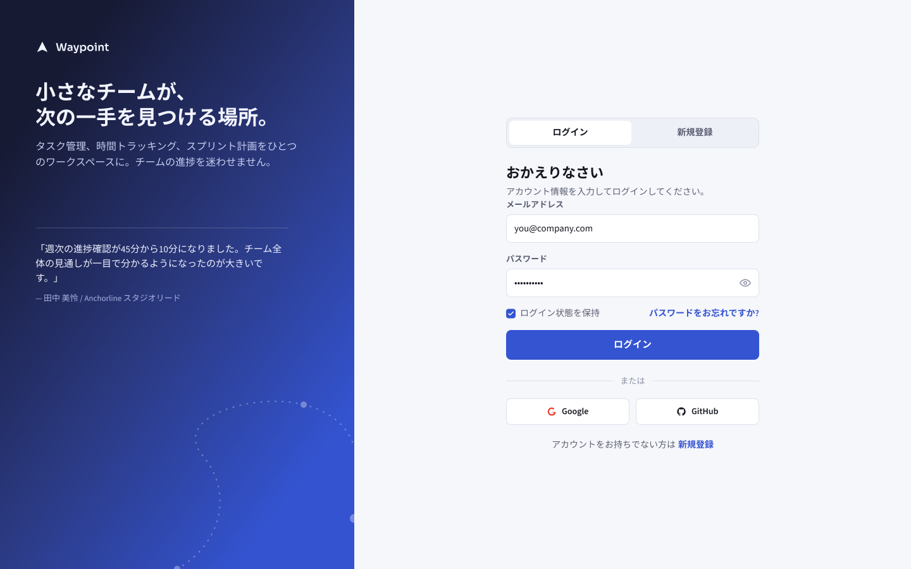
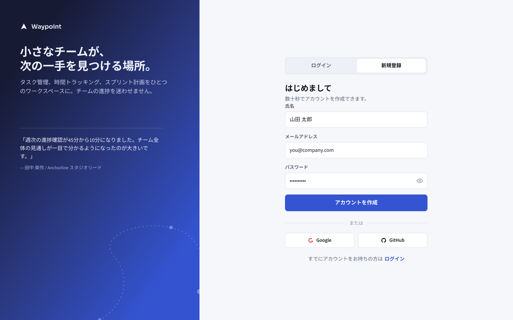
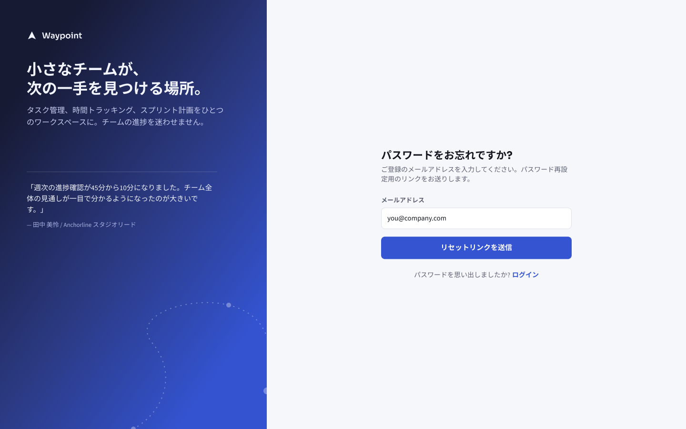
PC向けファンタジーRPGの戦闘中HUD。体力・マナ、ミニマップ、クエストトラッカー、アビリティホットバーをひとつの画面に統合し、視線の流れを設計。
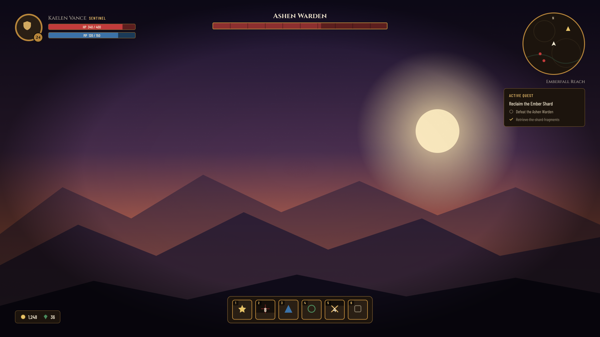
スマホ向けガチャRPGの主要画面一式。召喚演出、ショップ、ターン制バトル、インベントリまで、ゲームループ全体を貫く一貫したビジュアル言語で設計。
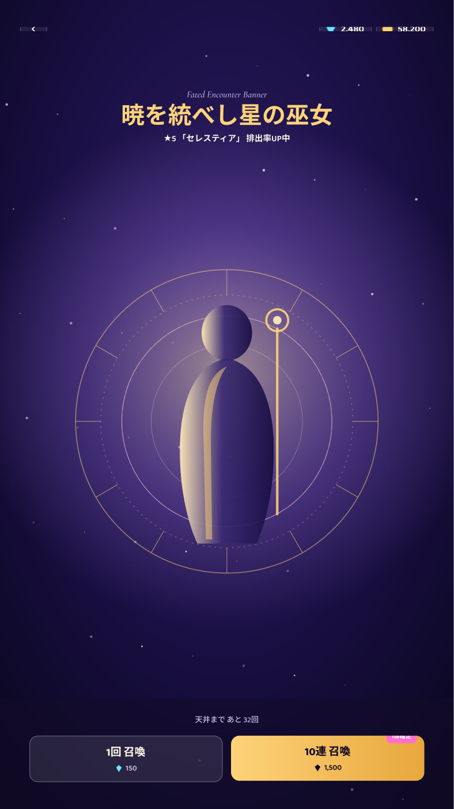
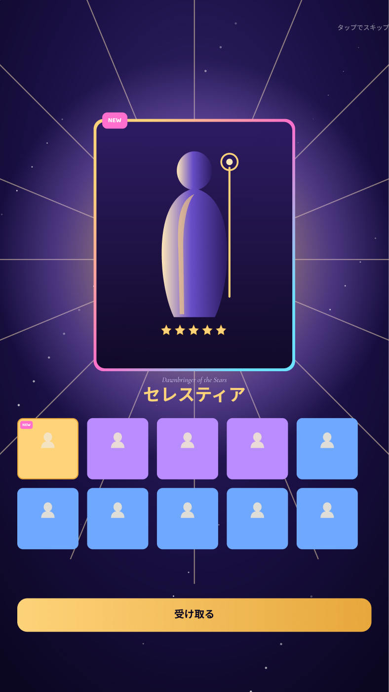
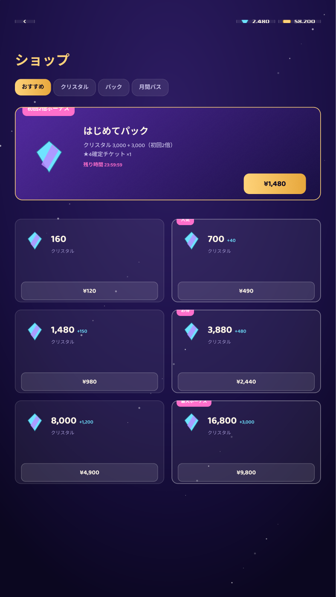
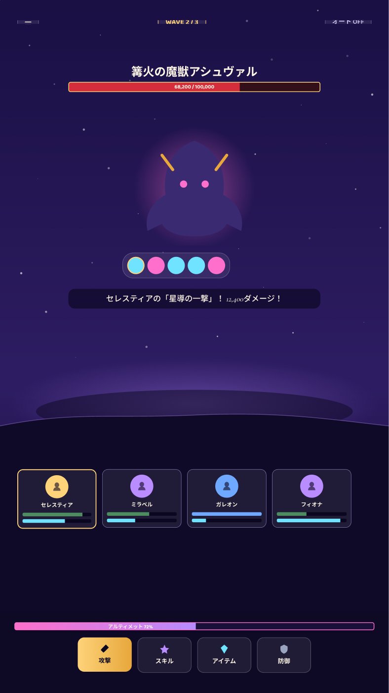
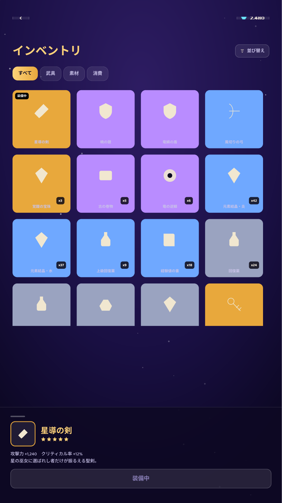
クマのシェフが主人公のカジュアルクッキングゲーム。ホーム・ショップ・マップ・バトル・ステータス・設定の全画面を、素材やコインが実際に連動するひとつの遊べるゲームとして統合。
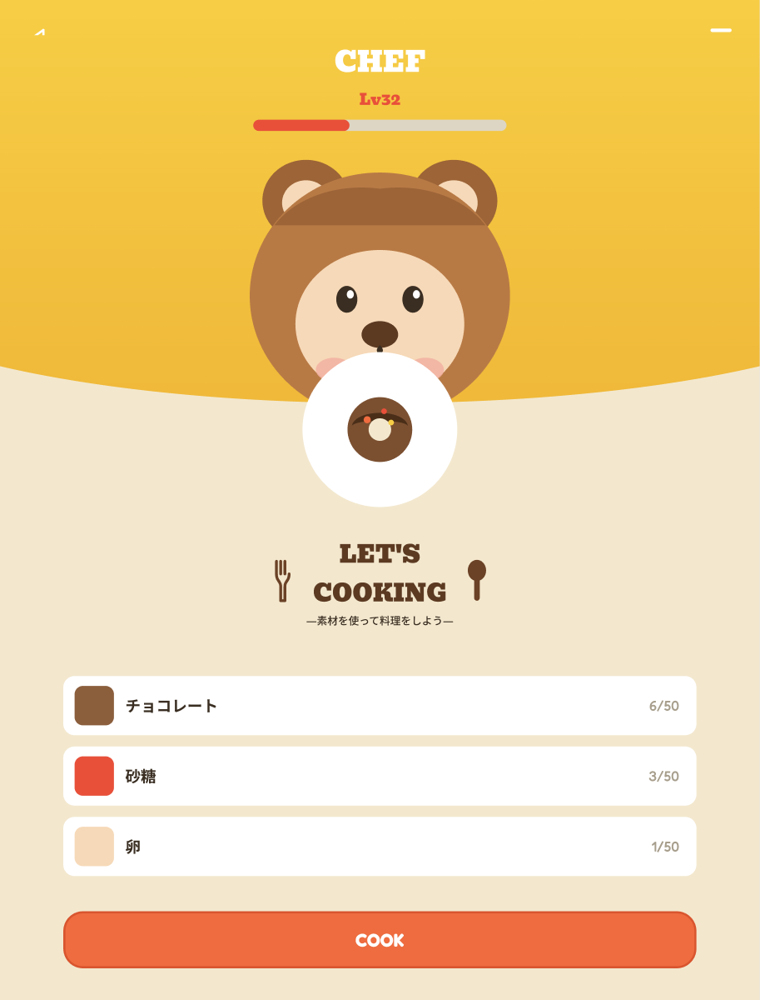
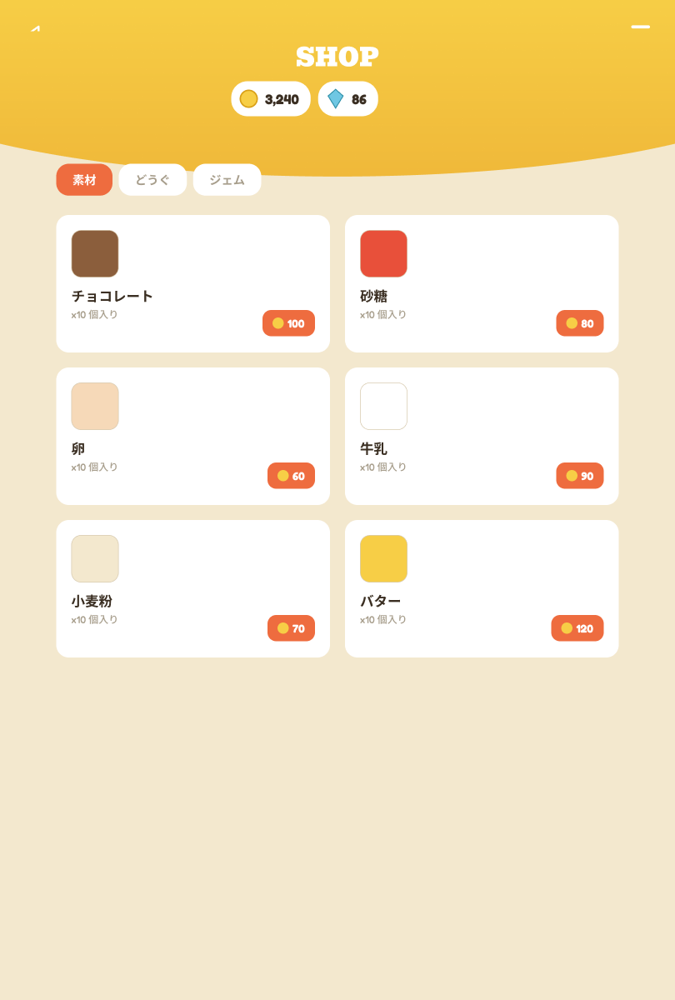
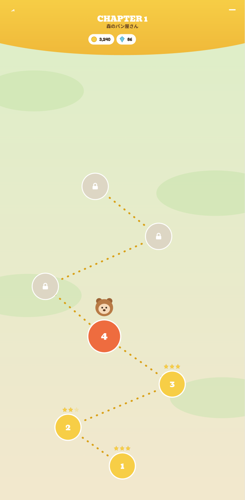
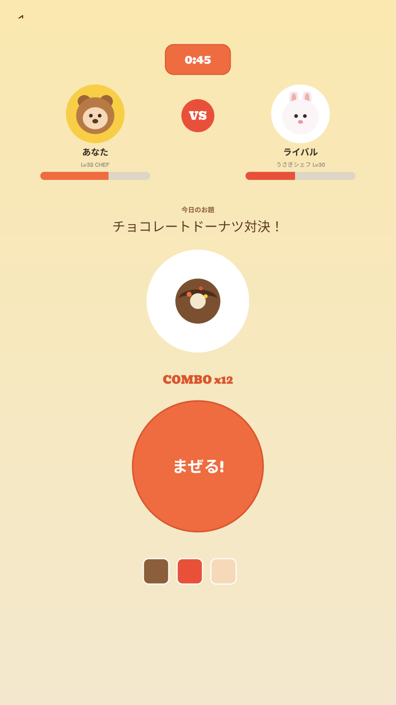
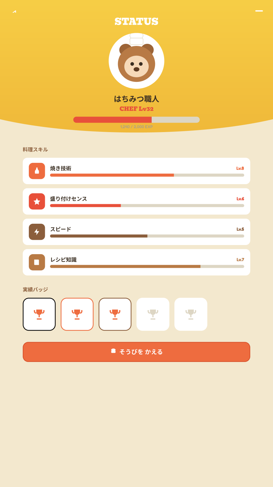
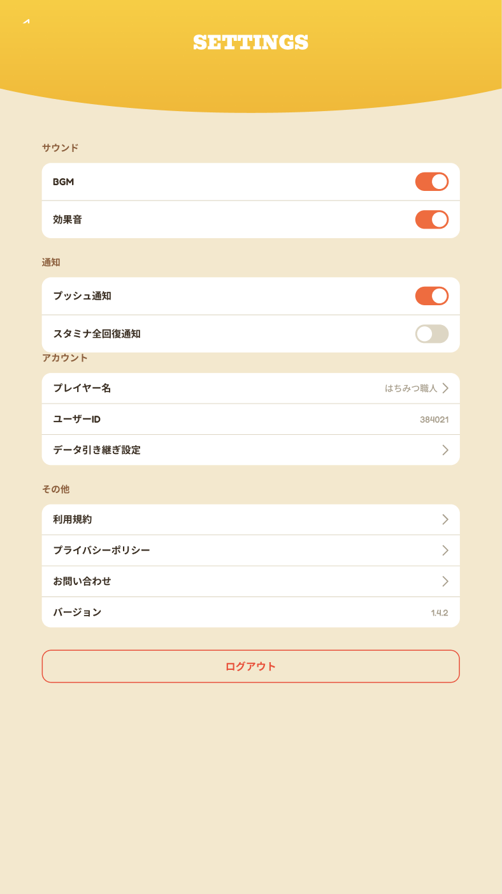